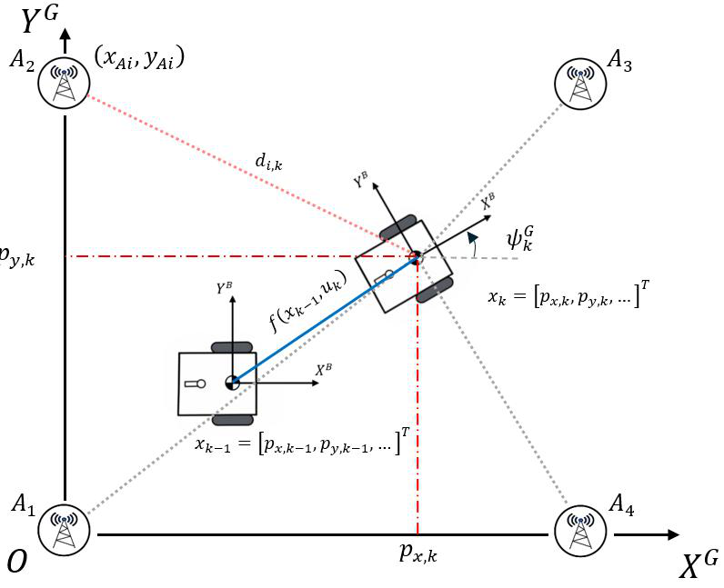

Embedded Positioning Algorithm
Firmware guide | Architecture | Previous: Ranging
The positioning system contains two separate algorithmic modules:
| Module | Responsibility |
|---|---|
| UKF State Estimator | Predict and update the Tag motion state |
| UWB Measurement Front End | Validate, filter, weight and select UWB ranges |
The front end does not estimate the final pose. The UKF does not decide which Anchors are trustworthy. Their interface is a selected three-range vector and its covariance.
1. Positioning Problem

The Tag moves in the global frame \(\{G\}\). IMU data is measured in the body frame \(\{B\}\). Fixed Anchors constrain the Tag position through UWB ranges.
| Input | Information provided |
|---|---|
| Acceleration \(\mathbf a^B\) | Short-term velocity and position change |
| Angular rate \(\omega_z^B\) | Short-term yaw change |
| Anchor coordinate \(\mathbf a_i\) | Fixed point in the global map |
| UWB range \(d_i\) | Distance from the Tag to Anchor \(i\) |
Yaw is zero along positive \(X^G\) and increases counter-clockwise.
2. Mathematical Model
2.1 State vector
| State | Meaning |
|---|---|
| \(\mathbf p^G=[p_x,p_y]^{\mathsf T}\) | Global position |
| \(\mathbf v^G=[v_x,v_y]^{\mathsf T}\) | Global velocity |
| \(\theta\) | Global yaw |
| \(\mathbf b_a=[b_{ax},b_{ay}]^{\mathsf T}\) | Accelerometer bias |
| \(b_{gz}\) | Z-axis gyroscope bias |
2.2 Motion model
The body-to-global planar rotation is
The continuous process model is
The IMU drives the motion state. Bias states model slowly changing offsets; process-noise terms represent unobserved motion and bias variation.
2.3 UWB observation model
For Anchor \(i\) at \(\mathbf a_i=[a_{x,i},a_{y,i}]^{\mathsf T}\):
The physical measurement is
\(\varepsilon_i\) is random range noise. \(b_i^{\mathrm{NLOS}}\) represents positive bias caused by obstruction or multipath. It is treated as a measurement disturbance, not an additional UKF state.
2.4 Noise model
Prediction uses
The range update uses
The UWB front end determines each \(R_{i,k}\) from measurement quality.
3. Algorithm Interfaces
| Module | Inputs | Outputs |
|---|---|---|
| UKF prediction | Previous posterior, IMU sample, \(\mathbf Q\) | Predicted state \(\mathbf x_k^-\) and covariance \(\mathbf P_k^-\) |
| UWB front end | Raw range frame, Anchor layout, predicted position/covariance | Selected Anchors, \(\mathbf d_k\), \(\mathbf R_k\) |
| UKF update | \(\mathbf x_k^-\), \(\mathbf P_k^-\), selected Anchors, \(\mathbf d_k\), \(\mathbf R_k\) | Posterior \(\mathbf x_k^+\) and \(\mathbf P_k^+\) |
The predicted state is exposed to the front end only as a reference for range consistency. The selected ranges and covariance are returned to the UKF as one measurement package.
Part I - UKF State Estimator
4. Unscented Transform
The UKF propagates deterministic sigma points through nonlinear models. For augmented dimension \(L\):
From augmented mean \(\mathbf x^a\) and covariance \(\mathbf P^a\):
The sigma-point weights are
Both UKF operations augment eight states with three noise variables. Therefore \(L=11\) and each transform uses \(2L+1=23\) sigma points.
5. UKF Initialization
The range-only estimator needs an initial Cartesian position.
| Quantity | Initial value |
|---|---|
| Position | Coordinate-wise median of 20 trilateration results after discarding 10 early results |
| Selected ranges | Median of the corresponding 20 accepted triplets |
| Velocity | \(\mathbf v_0=\mathbf 0\) |
| Yaw | Cached initial yaw |
| IMU biases | IMU calibration and conditioning result |
The initial covariance is
Three-range initialization solves
Subtracting the first circle equation gives the linear system
When \(\mathbf A\) is nonsingular, \(\mathbf p=\mathbf A^{-1}\mathbf b\). After initialization, trilateration is used only as a geometry and diagnostic probe.
6. UKF Prediction
6.1 Discrete motion
The implementation averages consecutive IMU samples:
6.2 Sigma-point propagation
Each augmented sigma point passes through the motion model:
The predicted state and covariance are
6.3 Stationary constraint
After more than 10 stationary samples, ZUPT constrains velocity:
ZUPT limits drift but does not generate a position measurement.
7. UKF Range Update
The UKF receives one measurement package from the UWB front end:
For update sigma point \(j\) and selected Anchor \(i\):
The predicted measurement and covariance are
The posterior update is
Covariance symmetry, diagonal floors and innovation jitter protect the single-precision matrix operations.
The range function directly observes position. Velocity, yaw and bias can change only through cross-covariance with position; yaw propagation itself comes from the gyroscope.
Part II - UWB Measurement Front End
8. Range Validation and Projection
The front end first creates a compact set of unique planar candidates.
| Check | Candidate is rejected when |
|---|---|
| Frame validity | Anchor result is not marked valid |
| Anchor identity | ID is outside the configured layout |
| Coordinate lookup | Anchor position is unavailable |
| Planar geometry | \(d_{3D,i}^2<(a_{z,i}-z_{\mathrm{Tag}})^2\) |
| Duplicate detection | The Anchor already exists in the candidate set |
The slant range is projected as
9. Spatial Consistency Prefilter
The front end receives predicted position \(\mathbf p_k^-\) and position covariance \(\mathbf P_{p,k}^-\) from the UKF.
9.1 Innovation
The position Jacobian is
Innovation variance and squared Mahalanobis distance are
9.2 Hysteresis
| Anchor state | Transition |
|---|---|
| Accepted | Reject when \(D_i^2>6\) |
| Rejected | Recover when \(D_i^2<5\) |
| Weak UKF reference | Skip gating when \(\sqrt{P_{xx}+P_{yy}}>0.50\,\mathrm m\) |
Separate reject and recovery thresholds prevent state chatter.
9.3 Controlled rescue
When fewer than three candidates remain, the least inconsistent rejected range may be restored only if
The rescued flag remains attached to the range and forces conservative covariance at the module output.
10. Measurement Precision
Each accepted range receives
| Term | Evidence represented |
|---|---|
| \(1/\sigma_i^2\) | Distance-dependent base precision |
| \(q_i^M\) | Spatial consistency |
| \(q_i^A\) | First-path radio confidence |
| \(q_i^R\) | Robust frame residual |
10.1 Common influence function
10.2 Range variance
10.3 Spatial influence
10.4 First-path influence
For session confidence \(c_i^{FP}\in[0,1]\):
Missing radio-quality data uses a conservative deficit of \(0.5\).
10.5 Robust residual influence
Residual evidence requires a trusted reference and at least four candidates:
With fewer than four candidates, \(q_i^R=1\).
11. Anchor-Triplet Selection
Every combination of three accepted Anchors is evaluated.
11.1 Geometry gate
A triplet is rejected when \(g<0.15\).
11.2 Weighted geometry
Lower WGDOP means stronger geometry after range confidence is included.
11.3 Residual score and switch hysteresis
For a trilaterated probe \(\mathbf p_{\mathrm{probe}}\):
The composite score is
The previous triplet is retained when
12. Front-End Output Contract
The selected three ranges are converted into the exact package consumed by the UKF:
| Output | Consumer |
|---|---|
| Three Anchor IDs and coordinates | UKF measurement function |
| Range vector \(\mathbf d_k\) | UKF innovation |
| Covariance \(\mathbf R_k\) | Augmented UKF measurement noise |
| Quality diagnostics | Telemetry and fault analysis |
Part III - Runtime Integration
13. Execution Order
| Event | Module invoked | Result |
|---|---|---|
| IMU data available | UKF prediction | Refresh \(\mathbf x_k^-\) and \(\mathbf P_k^-\) |
| UWB frame available | UWB front end | Produce selected Anchors, \(\mathbf d_k\) and \(\mathbf R_k\) |
| Valid front-end package | UKF update | Produce \(\mathbf x_k^+\) and \(\mathbf P_k^+\) |
| No valid UWB package | No UKF update | Retain predict-only state |
This runtime order does not merge the two algorithms. The front end uses the latest UKF prior only as a statistical reference; the UKF receives only the final measurement package.
14. Result and Diagnostics
| Output group | Contents |
|---|---|
| Navigation | Position, velocity and yaw |
| Measurement quality | Accepted, rejected and rescued Anchors |
| Selection quality | Selected mask, WGDOP, geometry and residual |
| Filter health | Position covariance, update status and error counters |
SensorFusion is queue-driven. Queue blocking, computation and explicit delay are separate timing components; the loop is not a guaranteed fixed-rate 50 Hz task.
Source Traceability
| Component | Firmware source |
|---|---|
| Runtime integration | firmware/uwb/Core/Src/freertos.c |
| UKF state estimator | firmware/uwb/sys/sys_sensor_fusion.c |
| Spatial prefilter | firmware/uwb/middlewares/mw_filter.c |
| Precision and Anchor selection | firmware/uwb/middlewares/mw_trilateration.c |
| Numerical parameters | firmware/uwb/sys/positioning_config.h |